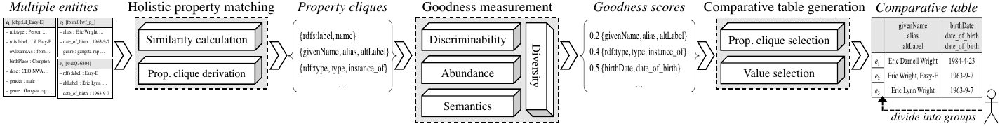

Jiacheng Huang, Wei Hu*, Haoxuan Li, Yuzhong Qu. Automated Comparative Table Generation for Facilitating Human Intervention in Multi-Entity Resolution. In SIGIR, 2018
Entity resolution (ER), the process of identifying entities that refer to the same real-world object, has long been studied in the knowledge graph (KG) community, among many others. Humans, as a valuable source of background knowledge, are increasingly getting involved in this loop by crowdsourcing and active learning, where presenting condensed and easily-compared information is vital to help human intervene in an ER task. However, current methods for single entity or pairwise summarization cannot well support humans to observe and compare multiple entities simultaneously, which impairs the efficiency and accuracy of human intervention. In this paper, we propose an automated approach to select a few important properties and values for a set of entities, and assemble them by a comparative table. We formulate several optimization problems for generating an optimal comparative table according to intuitive goodness measures and various constraints. Our experiments on real-world datasets, comparison with related work and user study demonstrate the superior efficiency, precision and user satisfaction of our approach in multi-entity resolution (MER).
Entity resolution (ER), the process of identifying entities that refer to the same real-world object, has long been studied in the knowledge graph (KG) community, among many others. Humans, as a valuable source of background knowledge, are increasingly getting involved in this loop by crowdsourcing and active learning, where presenting condensed and easily-compared information is vital to help human intervene in an ER task. However, current methods for single entity or pairwise summarization cannot well support humans to observe and compare multiple entities simultaneously, which impairs the efficiency and accuracy of human intervention. In this paper, we propose an automated approach to select a few important properties and values for a set of entities, and assemble them by a comparative table. We formulate several optimization problems for generating an optimal comparative table according to intuitive goodness measures and various constraints. Our experiments on real-world datasets, comparison with related work and user study demonstrate the superior efficiency, precision and user satisfaction of our approach in multi-entity resolution (MER).
Methodologies

To generate a comparative table for an MER task, our approach employs three processing steps:
- Holistic property matching aims to deal with the heterogeneity of properties. Our approach firstly leverages three similarity measures on properties' labels, local names and values for finding matched property pairs, e.g., e2.alias ⋍ e3.altLabel, which are later used to derive matched property sets, called property cliques, among multiple entities, e.g., {e1.givenName,e2.alias,e3.altLabel}. Our approach follows the widely-used duplicate-free assumption to constrain the global 1:1 matching, and develops an optimization algorithm to efficiently derive the optimal property cliques among those satisfying this constraint.
- Goodness measurement obtains the goodness of property cliques by combining four factors: (1) discriminability measures how well a property clique reveals the commonalities and differences among multiple entities; (2) abundance assesses how adequate of information the property clique provides; (3) semantics gives extra scores to the ones particularly useful for ER, e.g., owl:sameAs; and (4) diversity evaluates the redundancy between different property cliques. The goodness of values is measured using similar intuitions.
- Comparative table generation assembles entities, property cliques and values to construct a comparative table. In addition to greedily pick up several property cliques having the best goodness, our approach imposes a new entity coverage constraint to make sure that each entity is instantiated by a least number of properties. Due to the NP-hardness of optimal property clique selection under this constraint, our approach develops an approximate algorithm to efficiently find the solution. Also, value selection is optimized under a table cell size constraint.